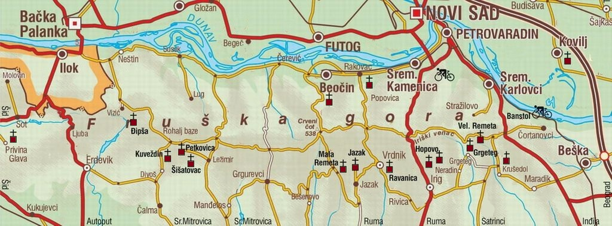

Фаза 1: Прва јавна претпродаја
Циљ:
- прикупљање средстава за обезбеђивање иницијалне ликвидности, у циљу изласка токена на берзу
- прикупљање средстава за обезбеђивање прве донације у складу са мисијом пројекта
Обим претпродаје:
- У овој фази доступно је 10% укупне количине токена Душанов Златник
Ограничења ради фер дистрибуције:
- Максимална куповина по кориснику ограничена је на 1% укупне количине,
како би се спречила централизација, заштитило тржиште од манипулација великих власника („китова“) и
онемогућили „pump and dump“ сценарији који угрожавају стабилност и поверење у пројекат
Цена токена:
- 1 Душанов Златник = 1 RSD ≈ 0.00001316 BNB
Паметни уговори:
- Адреса токена:
0x27a81dce6f4bd0f2a6f3c17e195ecdb773051a00
(верификовано)
- Адреса уговора:
0xF173D56F1893aE48A42566EA4f56062e48682F67
(верификовано)
- Токен и уговор су верификовани на BSC Scan-у, што обезбеђује потпуну транспарентност
јер је изворни код јавно доступан за увид
- Нема додатног „mint“-овања – количина токена је фиксна
- Нема „burn“-овања, закључавања или скривене контроле над средствима
- Нема злонамерних функција или „бекдоора“
Фаза 2: Додавање ликвидности и прва донација
План:
- 80% средстава прикупљених кроз Фазу 1 биће пласирано у берзу у односу 1 Душанов Златник : 1 RSD
(по истој цени претпродаје), а ликвидност ће бити закључана на период од најмање 12
месеци како би се спречиле манипулације („rug pull“)
- 20% средстава прикупљених кроз Фазу 1 биће усмерено као првe донацијe у складу са мисијом пројекта
Фаза 3: NFT
План:
- За сваки српски манастир биће креиран NFT
(енгл. Non-Fungible Token, односно незаменљиви токен
- јединствен дигитални запис на блокчејну који не може бити замењен другим.
У овом пројекту, сваки NFT представља уметнички приказ српског манастира
– слику са посебном симболиком и причом, везану за културно и духовно наслеђе)
- Продаја путем јавних лицитација, на Discord-у, валутом Душанов Златник
- 100% прихода од продатих NFT-ова (у динарској противвредности) иде манастиру коме NFT припада
Манастири за обнову
🕍 Фрушкогорски манастири
Ова листа приказује приоритетне православне манастире којима је потребна обнова — од најугроженијих ка мање
критичним:
- Манастир Бешеново
- Манастир Раковац
- Манастир Беочин
- Манастир Кувеждин
- Манастир Гргетег
- Манастир Јазак
- Манастир Велика Ремета
- Манастир Мала Ремета
- Манастир Шишатовац
- Манастир Дивша
- Манастир Ђипша
- Манастир Крушедол
- Манастир Хопово
- Манастир Стари Јазак
- Манастир Врдник (Раваница)
- Манастир Привина Глава
